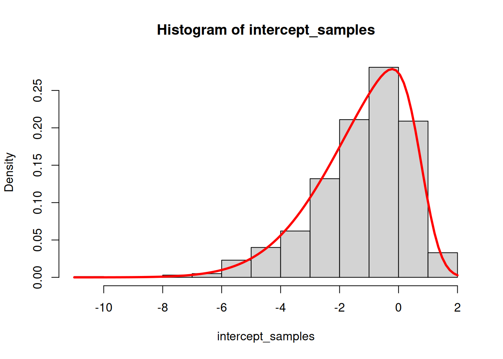
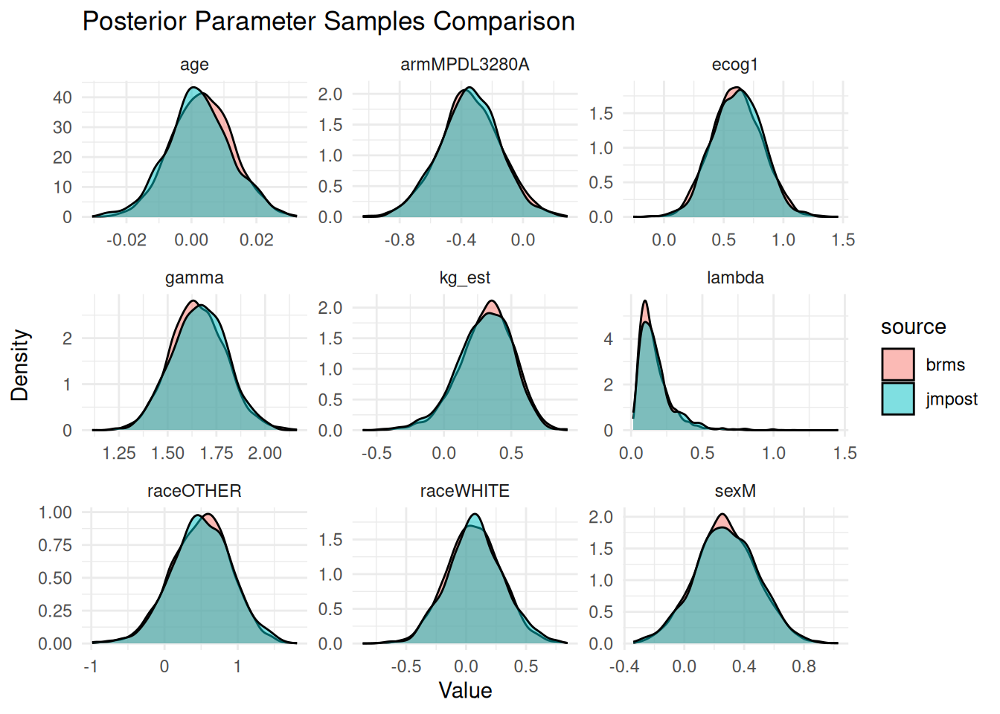

Let’s try to fit the same model now with brms. We will use the same data as in the previous notebook.
Setup and load data
First we need to load the necessary packages and set some default options for the MCMC sampling. We also set the theme for the plots to theme_bw with a base size of 12.
Show the code
library(bayesplot)library(brms)library(ggplot2)library(gt)library(here)library(janitor)library(jmpost)library(modelr)library(posterior)library(readxl)library(rstan)library(tidybayes)library(tidyverse)library(truncnorm)library(fuzzyjoin)library(sn)library(glue)if (require(cmdstanr)) {# If cmdstanr is available, instruct brms to use cmdstanr as backend# and cache all Stan binariesoptions(brms.backend ="cmdstanr",cmdstanr_write_stan_file_dir =here("_brms-cache") )dir.create(here("_brms-cache"), FALSE) # create cache directory if not yet available} else { rstan::rstan_options(auto_write =TRUE)}# MCMC optionsoptions(mc.cores =4)ITER <-1000# number of sampling iterations after warm upWARMUP <-2000# number of warm up iterationsCHAINS <-4BAYES.SEED <-878REFRESH <-500theme_set(theme_bw(base_size =12))
We also need a small function definition, which is still missing in brms:
# A tibble: 6 × 9
id arm ecog age race sex os_time os_event kg_est
<fct> <fct> <fct> <dbl> <fct> <fct> <dbl> <lgl> <dbl>
1 588 Docetaxel 0 61 WHITE F 2.05 FALSE 0.514
2 330 MPDL3280A 1 56 WHITE F 1.68 FALSE 0.479
3 791 Docetaxel 0 72 WHITE F 0.901 TRUE 0.387
4 635 Docetaxel 0 42 OTHER F 1.66 TRUE 0.549
5 365 MPDL3280A 0 64 WHITE F 1.43 TRUE 0.473
6 773 Docetaxel 0 65 WHITE M 1.63 FALSE 0.307
Model fitting with brms
Let’s first fit the model with brms. We will use the same model as in the previous notebook, but we will use the brms package to fit it.
An important ingredient for the model formula is the censoring information, passed via the cens() syntax: This should point to a variable containing the value 0 for observed events, i.e. no censoring, and the value 1 for right censored times (see ?brmsformula for more details). Therefore we first add such a variable to the data set:
formula <-bf( os_time |cens(os_cens) ~0+ ones + armMPDL3280A + ecog1 + age + raceOTHER + raceWHITE + sexM + kg_est)
So here we suppress the automatic intercept provided by brms by using the 0 + syntax, and instead we our “own” vector of ones. This is because we want to avoid the default centering of covariates which is performed by brms when using an automatic intercept. Otherwise it would be difficult to exactly match the prior distributions we used in the jmpost model further below.
In order to find out about the parametrization of the Weibull model with brms and Stan here, let’s check the Stan code generated by brms for it:
Show the code
stancode(formula, data = os_data_with_kg_design, family =weibull())
// generated with brms 2.22.0
functions {
}
data {
int<lower=1> N; // total number of observations
vector[N] Y; // response variable
// censoring indicator: 0 = event, 1 = right, -1 = left, 2 = interval censored
array[N] int<lower=-1,upper=2> cens;
int<lower=1> K; // number of population-level effects
matrix[N, K] X; // population-level design matrix
int prior_only; // should the likelihood be ignored?
}
transformed data {
// indices of censored data
int Nevent = 0;
int Nrcens = 0;
int Nlcens = 0;
array[N] int Jevent;
array[N] int Jrcens;
array[N] int Jlcens;
// collect indices of censored data
for (n in 1:N) {
if (cens[n] == 0) {
Nevent += 1;
Jevent[Nevent] = n;
} else if (cens[n] == 1) {
Nrcens += 1;
Jrcens[Nrcens] = n;
} else if (cens[n] == -1) {
Nlcens += 1;
Jlcens[Nlcens] = n;
}
}
}
parameters {
vector[K] b; // regression coefficients
real<lower=0> shape; // shape parameter
}
transformed parameters {
real lprior = 0; // prior contributions to the log posterior
lprior += gamma_lpdf(shape | 0.01, 0.01);
}
model {
// likelihood including constants
if (!prior_only) {
// initialize linear predictor term
vector[N] mu = rep_vector(0.0, N);
mu += X * b;
mu = exp(mu);
// vectorized log-likelihood contributions of censored data
target += weibull_lpdf(Y[Jevent[1:Nevent]] | shape, mu[Jevent[1:Nevent]] / tgamma(1 + 1 / shape));
target += weibull_lccdf(Y[Jrcens[1:Nrcens]] | shape, mu[Jrcens[1:Nrcens]] / tgamma(1 + 1 / shape));
target += weibull_lcdf(Y[Jlcens[1:Nlcens]] | shape, mu[Jlcens[1:Nlcens]] / tgamma(1 + 1 / shape));
}
// priors including constants
target += lprior;
}
generated quantities {
}
We can see that the Stan code uses the weibull_* function family to define the log-likelihood contributions.
We can check the Stan reference doc here for details of the parametrization. We can see that this is the so-called “standard” parametrization (see Wikipedia) with shape parameter \(\alpha\) and scale parameter \(\sigma\). The mean of this distribution is \(\sigma \Gamma(1 + 1/\alpha)\), where \(\Gamma\) is the gamma function. We can see in the brms generated code that accordingly the sigma parameter is defined as mu / tgamma(1 + 1 / shape), such that mu is really the mean of the distribution.
Now the problem is that this is a different parametrization than what we have used in jmpost (see the specification), which is the proportional hazards parametrization (see Wikipedia), where the covariate effects are on the log hazard scale instead of on the log mean scale. This has been identified by other brms users as a gap in the package, see e.g. here.
Fortunately, we can define a custom distribution in brms to use the proportional hazards parametrization. This parametrization relates to the Stan Weibull density definition with the transformation of \(\sigma := \gamma^{-1 / \alpha}\). The code here has been first written by Bjoern Holzhauer and was extended by Sebastian Weber to integrate more tightly with brms (source). One thing to keep in mind here is that for technical reasons the first parameter of the custom distribution needs to be named mu and not gamma.
Show the code
family_weibull_ph <-function(link_gamma ="log", link_alpha ="log") { brms::custom_family(name ="weibull_ph",# first param needs to be "mu" cannot be "gamma"; alpha is the shape:dpars =c("mu", "alpha"),links =c(link_gamma, link_alpha),lb =c(0, 0),# ub = c(NA, NA), # would be redundant# no need for `vars` like for `cens`, brms can handle this.type ="real",loop =TRUE )}sv_weibull_ph <- brms::stanvar(name ="weibull_ph_stan_code",scode ="real weibull_ph_lpdf(real y, real mu, real alpha) { // real sigma = pow(1 / mu, 1 / alpha); real sigma = pow(mu, -1 * inv( alpha )); return weibull_lpdf(y | alpha, sigma);}real weibull_ph_lccdf(real y, real mu, real alpha) { real sigma = pow(mu, -1 * inv( alpha )); return weibull_lccdf(y | alpha, sigma);}real weibull_ph_lcdf(real y, real mu, real alpha) { real sigma = pow(mu, -1 * inv( alpha )); return weibull_lcdf(y | alpha, sigma);}real weibull_ph_rng(real mu, real alpha) { real sigma = pow(mu, -1 * inv( alpha )); return weibull_rng(alpha, sigma);}",block ="functions")## R definitions of auxilary helper functions of brms, these are based## on the respective weibull (internal) brms implementations:log_lik_weibull_ph <-function(i, prep) { shape <-get_dpar(prep, "alpha", i = i) sigma <-get_dpar(prep, "mu", i = i)^(-1/ shape) args <-list(shape = shape, scale = sigma) out <- brms:::log_lik_censor(dist ="weibull",args = args,i = i,prep = prep ) out <- brms:::log_lik_truncate( out,cdf = pweibull,args = args,i = i,prep = prep ) brms:::log_lik_weight(out, i = i, prep = prep)}posterior_predict_weibull_ph <-function(i, prep, ntrys =5, ...) { shape <-get_dpar(prep, "alpha", i = i) sigma <-get_dpar(prep, "mu", i = i)^(-1/ shape) brms:::rcontinuous(n = prep$ndraws,dist ="weibull",shape = shape,scale = sigma,lb = prep$data$lb[i],ub = prep$data$ub[i],ntrys = ntrys )}posterior_epred_weibull_ph <-function(prep) { shape <-get_dpar(prep, "alpha") sigma <-get_dpar(prep, "mu")^(-1/ shape) sigma *gamma(1+1/ shape)}
We can again check the Stan code that is generated for this custom distribution:
Show the code
stancode( formula,data = os_data_with_kg_design,stanvars = sv_weibull_ph, # We pass the custom Stan functions' code here.family =family_weibull_ph())
// generated with brms 2.22.0
functions {
real weibull_ph_lpdf(real y, real mu, real alpha) {
// real sigma = pow(1 / mu, 1 / alpha);
real sigma = pow(mu, -1 * inv( alpha ));
return weibull_lpdf(y | alpha, sigma);
}
real weibull_ph_lccdf(real y, real mu, real alpha) {
real sigma = pow(mu, -1 * inv( alpha ));
return weibull_lccdf(y | alpha, sigma);
}
real weibull_ph_lcdf(real y, real mu, real alpha) {
real sigma = pow(mu, -1 * inv( alpha ));
return weibull_lcdf(y | alpha, sigma);
}
real weibull_ph_rng(real mu, real alpha) {
real sigma = pow(mu, -1 * inv( alpha ));
return weibull_rng(alpha, sigma);
}
}
data {
int<lower=1> N; // total number of observations
vector[N] Y; // response variable
// censoring indicator: 0 = event, 1 = right, -1 = left, 2 = interval censored
array[N] int<lower=-1,upper=2> cens;
int<lower=1> K; // number of population-level effects
matrix[N, K] X; // population-level design matrix
int prior_only; // should the likelihood be ignored?
}
transformed data {
// indices of censored data
int Nevent = 0;
int Nrcens = 0;
int Nlcens = 0;
array[N] int Jevent;
array[N] int Jrcens;
array[N] int Jlcens;
// collect indices of censored data
for (n in 1:N) {
if (cens[n] == 0) {
Nevent += 1;
Jevent[Nevent] = n;
} else if (cens[n] == 1) {
Nrcens += 1;
Jrcens[Nrcens] = n;
} else if (cens[n] == -1) {
Nlcens += 1;
Jlcens[Nlcens] = n;
}
}
}
parameters {
vector[K] b; // regression coefficients
real<lower=0> alpha; // skewness parameter
}
transformed parameters {
real lprior = 0; // prior contributions to the log posterior
lprior += normal_lpdf(alpha | 0, 4)
- 1 * normal_lccdf(0 | 0, 4);
}
model {
// likelihood including constants
if (!prior_only) {
// initialize linear predictor term
vector[N] mu = rep_vector(0.0, N);
mu += X * b;
mu = exp(mu);
for (n in 1:N) {
// special treatment of censored data
if (cens[n] == 0) {
target += weibull_ph_lpdf(Y[n] | mu[n], alpha);
} else if (cens[n] == 1) {
target += weibull_ph_lccdf(Y[n] | mu[n], alpha);
} else if (cens[n] == -1) {
target += weibull_ph_lcdf(Y[n] | mu[n], alpha);
}
}
}
// priors including constants
target += lprior;
}
generated quantities {
}
Indeed we can now use the custom distribution. We also see the default priors in the transformed parameters block on the shape parameter (alpha). We don’t see an explicit prior on the regression coefficients (b), which means an improper flat prior is used by default.
The remaining challenge is that in jmpost we specified a Gamma prior for \(\lambda\) which is now here the exponentiated intercept parameter. So in principle, we would need an ExpGamma prior on the intercept, meaning that if we exponentiate the intercept, it has a gamma distribution. However, this would again require a custom distribution. Let’s try to go with an approximation: we can just draw samples from the ExpGamma distribution (by sampling from a gamma distribution and taking the log) and then approximate this with a skewed normal distribution (see here for the Stan documentation):
Show the code
set.seed(123)intercept_samples <-log(rgamma(1000, 0.7, 1))library(sn)fit <-selm(intercept_samples ~1, family ="SN")xi <-coef(fit, "DP")[1]omega <-coef(fit, "DP")[2]alpha <-coef(fit, "DP")[3]hist(intercept_samples, probability =TRUE)curve(dsn(x, xi, omega, alpha), add =TRUE, col ="red", lwd =3)

Now we can finally specify the priors:
Show the code
priors <-c(set_prior( glue::glue("skew_normal({xi}, {omega}, {alpha})"),class ="b",coef ="ones" ),prior(normal(0, 20), class ="b"),prior(gamma(0.7, 1), class ="alpha"))
So the results agree well. We can also see this in density plots:
Show the code
# Combine the draws into one data framedraws_combined <-bind_rows(mutate(as_draws_df(draws_jmpost), source ="jmpost"),mutate(as_draws_df(draws_brms), source ="brms")) |>select(-.chain, -.iteration, -.draw)
Warning: Dropping 'draws_df' class as required metadata was removed.
Show the code
# Convert to long format for ggplot2draws_long <-pivot_longer( draws_combined,cols =-source,names_to ="parameter",values_to ="value")# Plot the densitiesggplot(draws_long, aes(x = value, fill = source)) +geom_density(alpha =0.5) +facet_wrap(~parameter, scales ="free") +theme_minimal() +labs(title ="Posterior Parameter Samples Comparison",x ="Value",y ="Density" )

Generally these agree very well with each other. For the \(\lambda\) parameter we do expect a slight difference, because we just used approximately the same prior distribution in brms compared to jmpost.
Source Code
---title: "2. OS model minimal workflow with `brms`"author: - Daniel Sabanés Bové - Francois Mercierdate: last-modifiededitor_options: chunk_output_type: inlineformat: html: code-fold: show html-math-method: mathjaxcache: true---Let's try to fit the same model now with `brms`. We will use the same data as in the previous notebook.## Setup and load data{{< include _setup_and_load.qmd >}}Here we directly start from the overall survival data with `kg` estimates, as we have obtained them in the previous notebook:```{r}os_data_with_kg <-readRDS(here("session-os/os_data_with_kg.rds"))head(os_data_with_kg)```## Model fitting with `brms`Let's first fit the model with `brms`. We will use the same model as in the previous notebook, but we will use the `brms` package to fit it. An important ingredient for the model formula is the censoring information, passed via the `cens()` syntax: This should point to a variable containing the value 0 for observed events, i.e. no censoring, and the value 1 for right censored times (see `?brmsformula` for more details). Therefore we first add such a variable to the data set:```{r}os_data_with_kg <- os_data_with_kg |>mutate(os_cens =ifelse(os_event, 0, 1) )```We define our own design matrix with a column of ones:```{r}os_data_with_kg_design <-model.matrix(~ os_time + os_cens + arm + ecog + age + race + sex + kg_est,data = os_data_with_kg) |>as.data.frame() |>rename(ones ="(Intercept)")head(os_data_with_kg_design)```Now we can define the model formula:```{r}formula <-bf( os_time |cens(os_cens) ~0+ ones + armMPDL3280A + ecog1 + age + raceOTHER + raceWHITE + sexM + kg_est)```So here we suppress the automatic intercept provided by `brms` by using the `0 +` syntax, and instead we our "own" vector of ones. This is because we want to avoid the default centering of covariates which is performed by `brms` when using an automatic intercept. Otherwise it would be difficult to exactly match the prior distributions we used in the `jmpost` model further below. In order to find out about the parametrization of the Weibull model with `brms` and Stan here, let's check the Stan code generated by `brms` for it:```{r}stancode(formula, data = os_data_with_kg_design, family =weibull())```We can see that the Stan code uses the `weibull_*` function family to define the log-likelihood contributions. We can check the Stan reference doc [here](https://mc-stan.org/docs/functions-reference/positive_continuous_distributions.html#weibull-distribution) for details of the parametrization. We can see that this is the so-called "standard" parametrization (see [Wikipedia](https://en.wikipedia.org/wiki/Weibull_distribution#Standard_parameterization)) with shape parameter $\alpha$ and scale parameter $\sigma$. The mean of this distribution is $\sigma \Gamma(1 + 1/\alpha)$, where $\Gamma$ is the gamma function. We can see in the `brms` generated code that accordingly the `sigma` parameter is defined as `mu / tgamma(1 + 1 / shape)`, such that `mu` is really the mean of the distribution.Now the problem is that this is a different parametrization than what we have used in `jmpost` (see the [specification](https://genentech.github.io/jmpost/main/articles/statistical-specification.html#weibull-distribution-proportional-hazard-parameterisation)), which is the proportional hazards parametrization (see [Wikipedia](https://en.wikipedia.org/wiki/Weibull_distribution#First_alternative)), where the covariate effects are on the log hazard scale instead of on the log mean scale. This has been identified by other `brms` users as a gap in the package, see e.g. [here](https://github.com/paul-buerkner/brms/issues/1677). Fortunately, we can define a custom distribution in `brms` to use the proportional hazards parametrization. This parametrization relates to the Stan Weibull density definition with the transformation of $\sigma := \gamma^{-1 / \alpha}$. The code here has been first written by Bjoern Holzhauer and was extended by Sebastian Weber to integrate more tightly with `brms` ([source](https://github.com/paul-buerkner/brms/issues/1677)). One thing to keep in mind here is that for technical reasons the first parameter of the custom distribution needs to be named `mu` and not `gamma`.```{r}family_weibull_ph <-function(link_gamma ="log", link_alpha ="log") { brms::custom_family(name ="weibull_ph",# first param needs to be "mu" cannot be "gamma"; alpha is the shape:dpars =c("mu", "alpha"),links =c(link_gamma, link_alpha),lb =c(0, 0),# ub = c(NA, NA), # would be redundant# no need for `vars` like for `cens`, brms can handle this.type ="real",loop =TRUE )}sv_weibull_ph <- brms::stanvar(name ="weibull_ph_stan_code",scode ="real weibull_ph_lpdf(real y, real mu, real alpha) { // real sigma = pow(1 / mu, 1 / alpha); real sigma = pow(mu, -1 * inv( alpha )); return weibull_lpdf(y | alpha, sigma);}real weibull_ph_lccdf(real y, real mu, real alpha) { real sigma = pow(mu, -1 * inv( alpha )); return weibull_lccdf(y | alpha, sigma);}real weibull_ph_lcdf(real y, real mu, real alpha) { real sigma = pow(mu, -1 * inv( alpha )); return weibull_lcdf(y | alpha, sigma);}real weibull_ph_rng(real mu, real alpha) { real sigma = pow(mu, -1 * inv( alpha )); return weibull_rng(alpha, sigma);}",block ="functions")## R definitions of auxilary helper functions of brms, these are based## on the respective weibull (internal) brms implementations:log_lik_weibull_ph <-function(i, prep) { shape <-get_dpar(prep, "alpha", i = i) sigma <-get_dpar(prep, "mu", i = i)^(-1/ shape) args <-list(shape = shape, scale = sigma) out <- brms:::log_lik_censor(dist ="weibull",args = args,i = i,prep = prep ) out <- brms:::log_lik_truncate( out,cdf = pweibull,args = args,i = i,prep = prep ) brms:::log_lik_weight(out, i = i, prep = prep)}posterior_predict_weibull_ph <-function(i, prep, ntrys =5, ...) { shape <-get_dpar(prep, "alpha", i = i) sigma <-get_dpar(prep, "mu", i = i)^(-1/ shape) brms:::rcontinuous(n = prep$ndraws,dist ="weibull",shape = shape,scale = sigma,lb = prep$data$lb[i],ub = prep$data$ub[i],ntrys = ntrys )}posterior_epred_weibull_ph <-function(prep) { shape <-get_dpar(prep, "alpha") sigma <-get_dpar(prep, "mu")^(-1/ shape) sigma *gamma(1+1/ shape)}```We can again check the Stan code that is generated for this custom distribution:```{r}stancode( formula,data = os_data_with_kg_design,stanvars = sv_weibull_ph, # We pass the custom Stan functions' code here.family =family_weibull_ph())```Indeed we can now use the custom distribution. We also see the default priors in the `transformed parameters` block on the shape parameter (`alpha`). We don't see an explicit prior on the regression coefficients (`b`), which means an improper flat prior is used by default. The remaining challenge is that in `jmpost` we specified a Gamma prior for $\lambda$ which is now here the exponentiated intercept parameter. So in principle, we would need an `ExpGamma` prior on the intercept, meaning that if we exponentiate the intercept, it has a gamma distribution. However, this would again require a custom distribution. Let's try to go with an approximation: we can just draw samples from the `ExpGamma` distribution (by sampling from a gamma distribution and taking the log) and then approximate this with a skewed normal distribution (see [here](https://mc-stan.org/docs/functions-reference/unbounded_continuous_distributions.html#skew-normal-distribution) for the Stan documentation):```{r}set.seed(123)intercept_samples <-log(rgamma(1000, 0.7, 1))library(sn)fit <-selm(intercept_samples ~1, family ="SN")xi <-coef(fit, "DP")[1]omega <-coef(fit, "DP")[2]alpha <-coef(fit, "DP")[3]hist(intercept_samples, probability =TRUE)curve(dsn(x, xi, omega, alpha), add =TRUE, col ="red", lwd =3)```Now we can finally specify the priors: ```{r}priors <-c(set_prior( glue::glue("skew_normal({xi}, {omega}, {alpha})"),class ="b",coef ="ones" ),prior(normal(0, 20), class ="b"),prior(gamma(0.7, 1), class ="alpha"))```Let's do a final check of the Stan code:```{r}stancode( formula,data = os_data_with_kg_design,prior = priors,stanvars = sv_weibull_ph,family =family_weibull_ph())```Now we can fit the model:```{r}save_file <-here("session-os/brms1.rds")if (file.exists(save_file)) { fit <-readRDS(save_file)} else { fit <-brm(formula = formula,data = os_data_with_kg_design,prior = priors,stanvars = sv_weibull_ph,family =family_weibull_ph(),chains = CHAINS,iter = ITER + WARMUP,warmup = WARMUP,seed = BAYES.SEED,refresh = REFRESH )saveRDS(fit, save_file)}summary(fit)```So the model converged fast and well.## Comparison of resultsLet's compare the results of the `brms` model with the `jmpost` model.First we load again the `jmpost` results:```{r}draws_jmpost <-readRDS(here("session-os/os_draws.rds")) |>rename_variables("gamma"="sm_weibull_ph_gamma","lambda"="sm_weibull_ph_lambda" )summary(draws_jmpost)```We prepare above `brms` results in the same format:```{r}draws_brms <-as_draws_array(fit) |>mutate_variables(lambda =exp(b_ones)) |>rename_variables("gamma"="alpha","armMPDL3280A"="b_armMPDL3280A","ecog1"="b_ecog1","age"="b_age","raceOTHER"="b_raceOTHER","raceWHITE"="b_raceWHITE","sexM"="b_sexM","kg_est"="b_kg_est" ) |>subset_draws(variable =c("armMPDL3280A","ecog1","age","raceOTHER","raceWHITE","sexM","kg_est","gamma","lambda" ) )summary(draws_brms)```So the results agree well. We can also see this in density plots:```{r}# Combine the draws into one data framedraws_combined <-bind_rows(mutate(as_draws_df(draws_jmpost), source ="jmpost"),mutate(as_draws_df(draws_brms), source ="brms")) |>select(-.chain, -.iteration, -.draw)# Convert to long format for ggplot2draws_long <-pivot_longer( draws_combined,cols =-source,names_to ="parameter",values_to ="value")# Plot the densitiesggplot(draws_long, aes(x = value, fill = source)) +geom_density(alpha =0.5) +facet_wrap(~parameter, scales ="free") +theme_minimal() +labs(title ="Posterior Parameter Samples Comparison",x ="Value",y ="Density" )```Generally these agree very well with each other. For the $\lambda$ parameter we do expect a slight difference, because we just used approximately the same prior distribution in `brms` compared to `jmpost`.